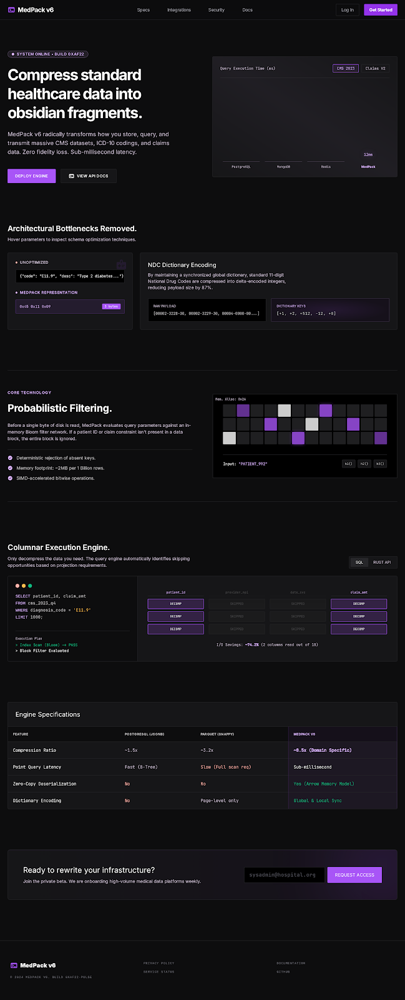

Columnar & typed
Row groups, per-column chunks, and typed statistics (numeric, date, NDC, ICD-10) keep both compression and filter pruning sharp.
Interactive launchpad
MedPack v6 brings a domain-aware predicate pushdown engine on top of lossless columnar encoding — so you compress first, then filter and scan without touching general-purpose codecs.

Stitch design system — Obsidian / electric purple
High-contrast, infrastructure-grade clarity: classify columns with healthcare context, encode per family, then serve queries with row-group statistics.
Row groups, per-column chunks, and typed statistics (numeric, date, NDC, ICD-10) keep both compression and filter pruning sharp.
The query path skips work using stored stats — not by guessing generic compression, but from medical types and per–row-group bounds.
Fuzzing and file-level checks back the lossless story — with dedicated validation and Parquet A/B pages below.
Static, self-contained HTML: open in the browser, no backend. These are the v6 reports shipped with the MedPack project.
Prefer the hosted paths on this site: /medpack_v6_validation.html and /medpack_v6_benchmark.html
We’ll route API keys and integration notes to your team as the beta opens up.
No spam. You can opt out any time.